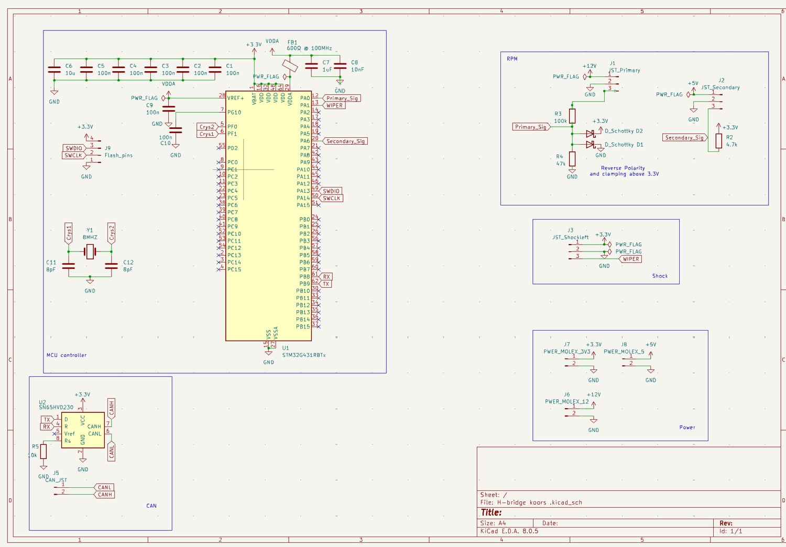
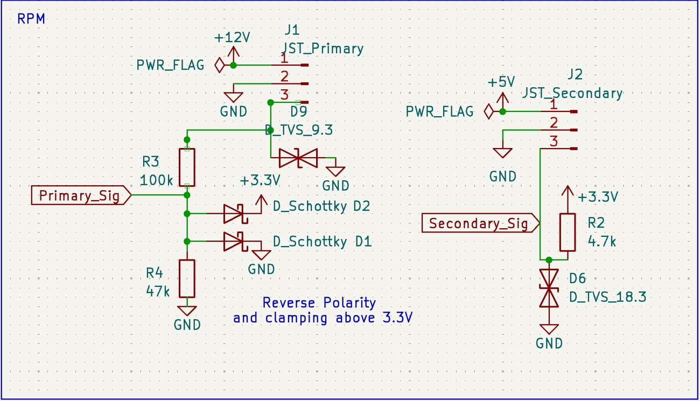
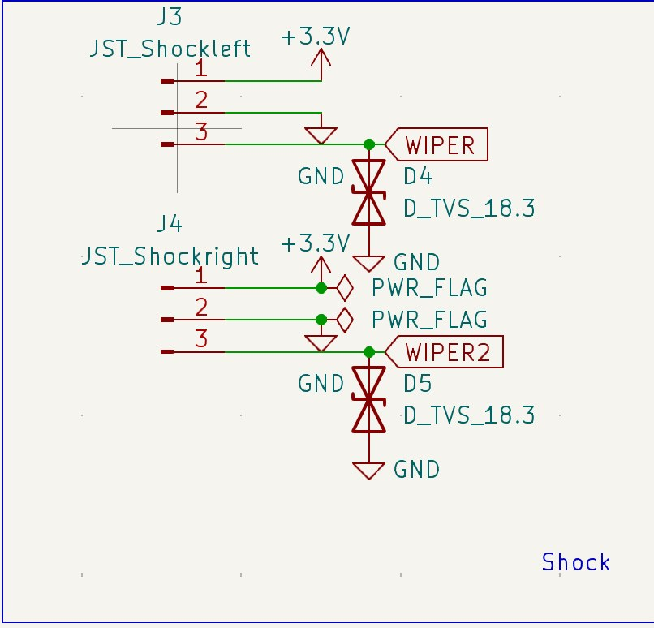
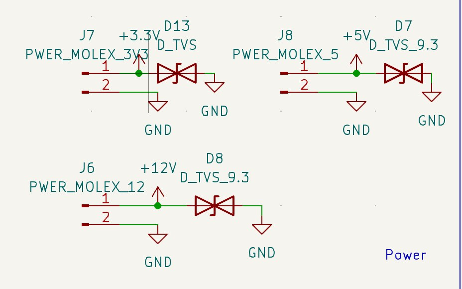
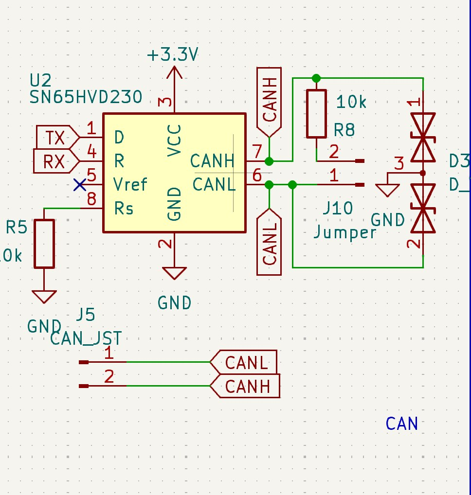
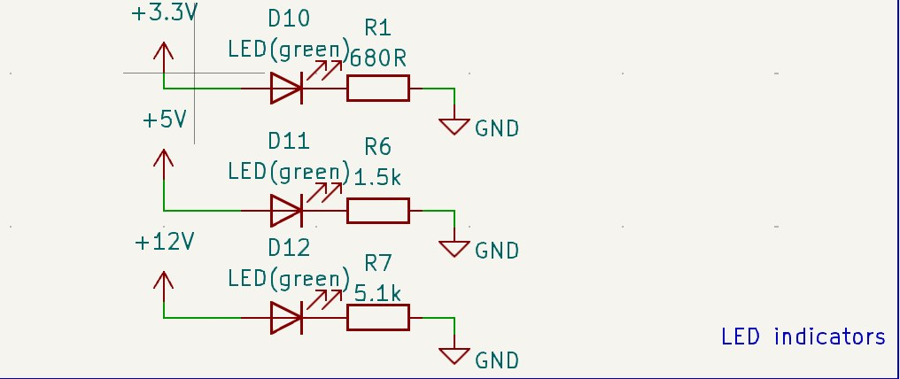
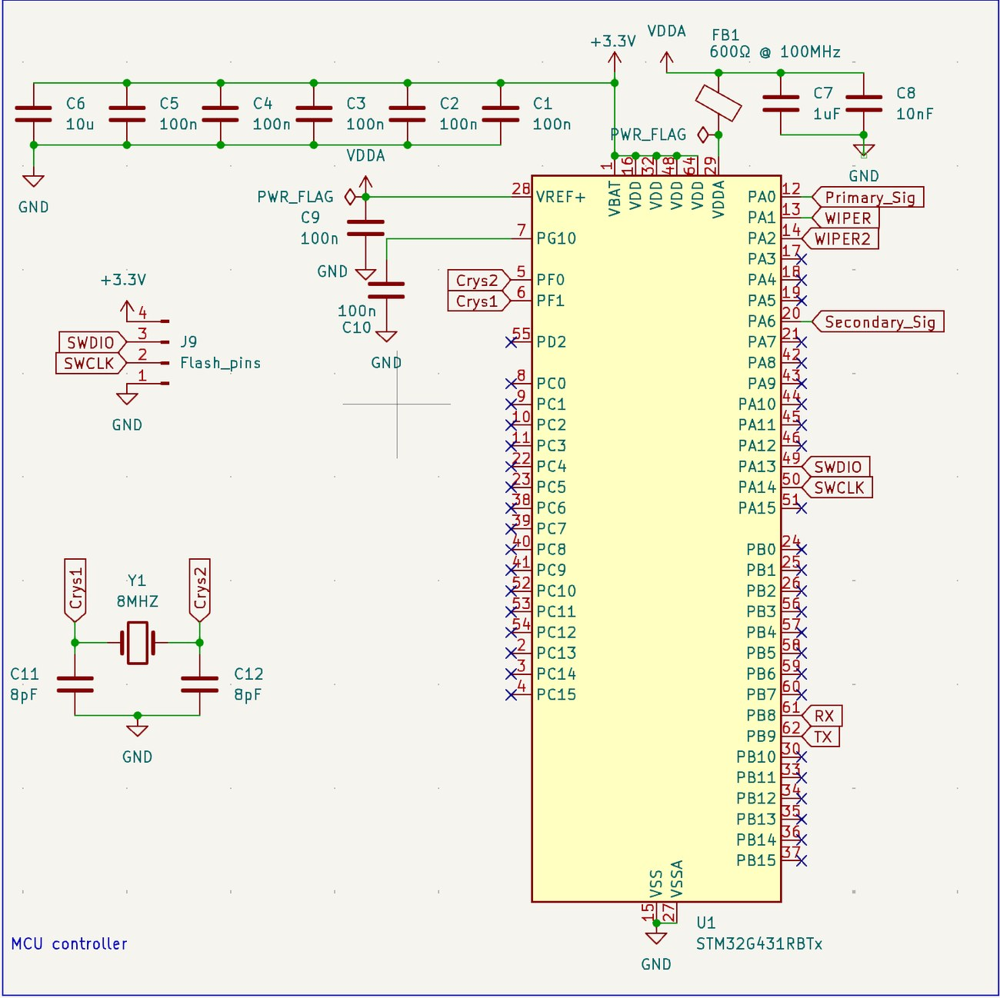
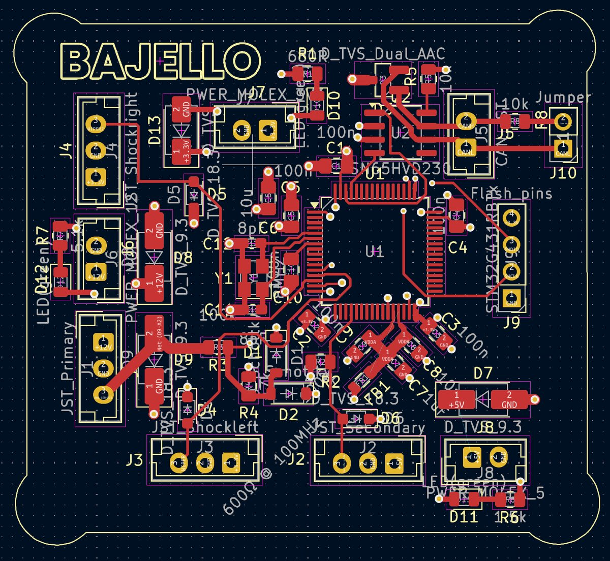

- Job
- Acquire engine RPM, CVT secondary RPM, and two rear shock pots; publish to the vehicle CAN bus
- MCU
- STM32G431RBTx — native FDCAN, hardware timer capture, FMAC filter accelerator
- Theme
- Every external pin is a way for the vehicle to damage the board. Everything gets clamped.
- Status
- Schematic complete through ERC · layout routed · not yet fabricated

1 — The sensor front ends
The two RPM channels are the reason this board is interesting. Both are open-collector — both sink and neither sources — yet they need different circuits, because they live in different voltage domains.

Primary — open-collector, 12 V domain
The spark pickup gives one open-collector pulse per ignition event, referenced to its 12 V supply — roughly 4× the MCU's absolute maximum. The board scales it with a divider, clamps what survives to within a diode drop of the rails with the Schottky pair, and puts a TVS at the connector for the transient the divider is too slow for.
Secondary — open-collector, 5 V domain
Same output topology, easier voltage. One pull-up resistor is the entire signal conditioning, and its rail — not the sensor's 5 V supply — sets the logic-high level the MCU sees, so it lands on 3.3 V logic with no translation stage.
Bench fix vs. board fix
On the Arduino bench the inductive channel was rebuilt around a 2N3904 used as a level translator, after the divider there let the logic-high sag to 2.4 V. This board still carries the divider, with Schottky and TVS clamping added around it. Since an open-collector output has nothing of its own to pull the line high, a divider without a pull-up is the wrong topology — this needs re-testing against the sensor before the board is fabricated.

2 — Protection, everywhere
A test bench is a forgiving place. A car is not: every wire leaving this board is a long antenna running past an ignition system, and every connector is a path for a transient that the MCU will not survive.



3 — MCU and layout



- Hiding the planes is the useful view. With the pours on, everything looks connected. With them off you can see which traces take a long way round, and which analog runs sit next to something switching.
- Decoupling placement is the requirement, not the schematic. Each cap has to sit within a few millimetres of its pin, or the bond-wire inductance it exists to cancel wins anyway.
- Connectors are a pigtail. Deutsch DT is wire-to-wire only with no PCB footprint, so the board carries Molex Micro-Fit 3.0 with mounting pegs and the DT lives on the harness — the pegs putting vibration load into the board rather than the solder joints.
One open discrepancy
The schematic carries an SN65HVD230 transceiver; the ordering sheet has TJA1051T/3 marked as ordered. They are pin-compatible in the common SOIC-8 arrangement but not identical — the SN65HVD230 has a slope-control pin where the TJA1051 has a mode input. Worth reconciling before fabrication.